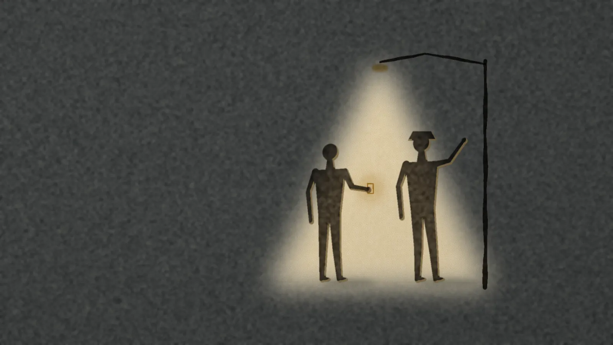

Your Constitution, in plain words.
Eight short lessons before Kenya votes on 10 August 2027.

What’s happening to you?
The police stopped or arrested me
You must be told why, you may stay silent and call a lawyer, and you must see a court within 24 hours. (Art 49)
- Do this
- Stay calm, ask why, and note names, badge numbers and the time.
- Go to
- IPOA, toll free 1559
Someone offered money for my vote
Giving and taking a bribe for a vote are both crimes: up to KES 2 million, six years in prison, or both. (Election Offences Act, s.9)
- Do this
- Refuse it, note who, where and when, and report it.
- Go to
- IEBC, (020) 2877000, and the police
A leader is stirring up hatred
Hate speech and incitement to violence are not protected by freedom of expression. (Art 33(2))
- Do this
- Don’t forward it. Take a screenshot and report it.
- Go to
- NCIC, toll free or SMS 1547
Am I registered to vote?
Every adult citizen has the right to be registered, at one registration centre only. (Art 38(3), 83)
- Do this
- Check your details at verify.iebc.or.ke with your ID number and year of birth.
- Go to
- Your IEBC constituency office
My county raised a fee unasked
County assemblies must let the public take part in their business, including fees and budgets. (Art 196)
- Do this
- Ask for the county Finance Bill, and put your objection in writing.
- Go to
- Your MCA and your county assembly
A government office ignored me
You have the right to administrative action that is fast, lawful, reasonable and fair. (Art 47)
- Do this
- Write down what happened and when, and keep copies of what you sent.
- Go to
- The Ombudsman, toll free 0800 221 349
Eight lessons, about ten minutes each.
- 1 Your rights: what they are, and how to carry them in your head
- 2 Registering and voting
- 3 What’s illegal in an election, and how to report it
- 4 When an election result is disputed
- 5 Leadership and integrity: how to judge a candidate
- 6 Who does what: your six leaders and your county
- 7 Having your say, and recalling leaders
- 8 If you’re arrested, or your rights are violated
Six ballots. The smallest one sets your market fee.
- PresidentProposes national taxes and signs them into law.
- GovernorRuns county clinics, roads and markets.
- SenatorShares money among the 47 counties.
- Woman MemberVotes on every national tax.
- MPVotes on every national tax and the budget.
- MCAVotes on your market fee and permit.

Six numbers worth saving in your phone.
- 1547Hate speechNCIC, call or SMS
- 1551CorruptionEACC
- 1559Police abuseIPOA, 24 hours
- 22359Rights violatedKNCHR, by SMS
- 0800 720 640Free legal helpLegal Aid Service
- 020 2877000Voter registrationIEBC
Copied from each office’s own website on 27 November 2026. Every office, with addresses
Every rule points to its Article.
You must be brought before a court within 24 hours of arrest (Art 49(1)(f)).
- Each Article was checked against the official text on Kenya Law.
- Each phone number came from the office’s own website.
- A date we couldn’t confirm isn’t printed: for registration dates, check iebc.or.ke.
Kila somo lina muhtasari kwa Kiswahili.